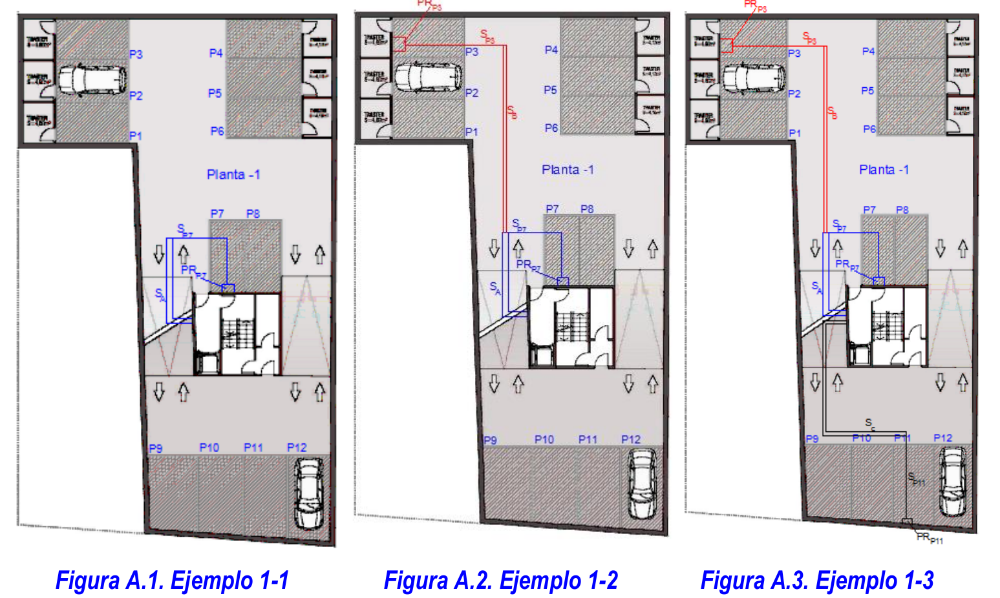

import numpy as np
import pandas as pd
from IPython.display import display, HTML
%%html
<style>
img {
display: block;
margin-left: auto;
margin-right: auto;
}
table {
display: block;
margin-left: auto;
margin-right: auto;
}
.dataframe {
display: block;
margin-left: auto;
margin-right: auto;
width: 40%;
}
</style>
<script>
code_show=true;
function code_toggle() {
if (code_show){
$('div.input').hide();
} else {
$('div.input').show();
}
code_show = !code_show
}
$( document ).ready(code_toggle);
</script>
<form action="javascript:code_toggle()"><input type="submit" value=""></form>
Ejemplo explicativo de canalizaciones comunes a prever al instalar el primer punto de recarga:
Se presenta el siguiente ejemplo de aparcamiento en un edificio existente. Según este ejemplo, el primer punto de recarga sería el de la plaza 7 (P7). En este ejemplo, la canalización común que parte del vestíbulo de acceso y llega hasta la plaza P7 se dimensionaría para albergar los cables necesarios para la recarga del 15% de las plazas de la zona próxima a la P7 para evitar así la instalación posterior de otros sistemas de conducción con el mismo trazado. En función de la distribución en planta del aparcamiento se considera que esta zona cubre 7 plazas más (de la P1 a la P8, excluida la P7), por lo que se recomienda dimensionar la canalización para alimentar al menos dos estaciones de recarga adicionales, redondeando al entero superior, es decir tres estaciones de recarga en total. (ver Figura A.1).
Si la segunda plaza con punto de recarga (PR) fuera la P3, la canalización entre la plaza P7 y la P3 se dimensionaría con el mismo criterio para albergar los cables que alimenten al 15% de las plazas de la zona próxima a P3 (de P1 a P6, excluida la P3), es decir para un punto de recarga adicional al propio instalado en P3 (ver Figura A.2).
En un supuesto distinto, si la primera plaza a alimentar fuera la P3, el tramo hasta P7 se dimensionaría para alimentar tres estaciones de recarga y el tramo entre P7 y P3 para alimentar a dos, reduciendo la sección de la conducción a medida que se reduce el número de plazas posibles a alimentar.

Si la plaza con PR fuera la P11, la canalización se dimensionaría para albergar los cables que alimenten al 15% de las plazas de la zona próxima a P11 (de P9 a P12, excluida la P11), es decir para un punto de recarga adicional al propio instalado en P11 (ver Figura A.3).
Por otra parte, al tratarse de un aparcamiento con varias plantas, el dimensionamiento de la canalización también debe aplicarse al tramo vertical. Suponiendo que el aparcamiento tuviera un total de 4 sótanos (S1, S2, S3 y S4) con 12 plazas por planta y que la primera plaza a alimentar estuviera en sótano S1, el tramo vertical de canalización se dimensionaría según estos criterios para albergar los cables que puedan alimentar además de la primera plaza en la que se instala el PR, el 15% de las plazas restantes. En general, el dimensionamiento de los tramos verticales de la canalización respondería a la siguiente tabla:
tramo=['PB-S1','S1-S2','S2-S3','S3-S4']
Capacidad=np.ceil((np.asarray([47.,35,23,11])*0.15)+1).tolist()
df=pd.DataFrame(Capacidad,tramo,columns=['Capacidad dimensionada'])
dfh=df.style.background_gradient().format("{:.1f}").render()
display(HTML(dfh))
Interruptor=np.asarray([16, 32, 50, 63])
Interruptor*230
v=24
i=30*10**-3
r=v/i
r